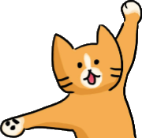

Penelope the Neocities Cat

Size matters here, this is a small article, and needs to be bigger!
More information should be added to this article, such as fan art of Penny. If you do use fan art, make sure if has an open license (such as the MIT License, or Creative Commons), if the image does not have an open license, then change the size of the image, so that the use of it would fall under fair use.
2019-03-05
Penelope is the ginger cat that is used as the only official mascot for Neocities. Penelope was first created around the same time as Neocities was made in 2013 by Victoria Wang. She is most often seen with a hard hat on, a paint brush, and a wrench.
She can be found on Neocities' 404 pages, where it is stated that she is the system administrator for the host.
Penelope is also used on the crash course in HTML webpage.
For some reason Penelope has had two forms, with two colours, her first form was the one seen at the top that uses these Hex colour #EA941D, while her later appearances uses the Hex colour #F6AD52 for her fur - a much lighter tone of orange. Along with this, she is also seen without her hard hat, paint brush and wrench.

References
This page was last updated: 06/09/2018 @ 11:15
In total this page has had 2 updates since it was uploaded.
★